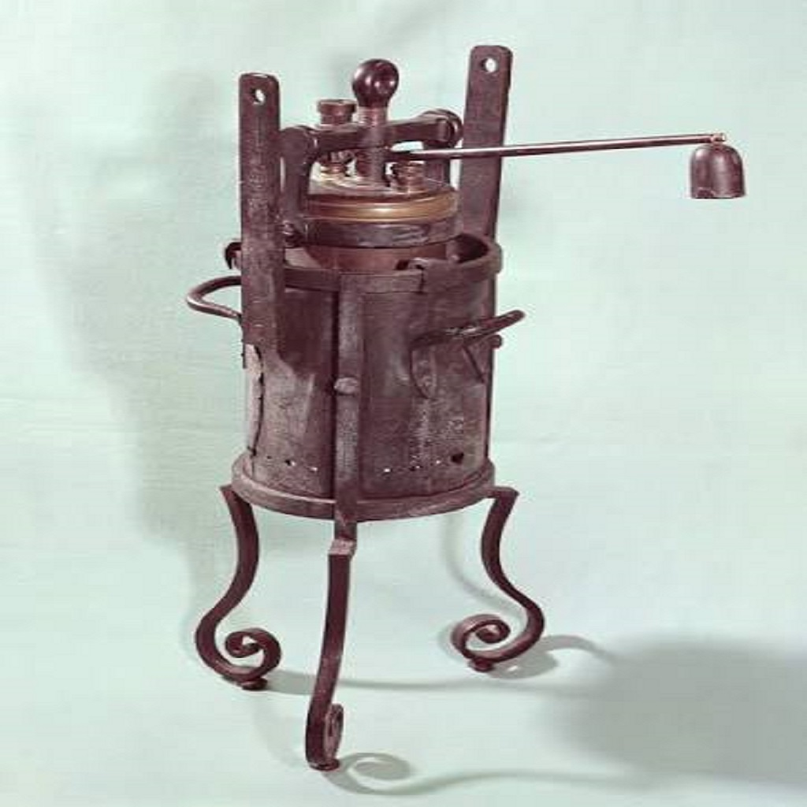

origem da panela de pressão remonta ao ano de 1679, quando foi inventada pelo físico e matemático francês Denis Papin. O primeiro protótipo foi batizado por ele como "Digestor a Vapor" (ou Marmita de Papin) e tinha o objetivo científico de demonstrar o poder do vapor e amaciar ossos e carnes duras rapidamente